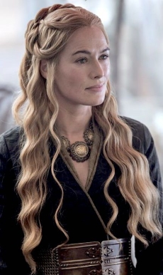

Casa Lannister

La Casa Lannister de Roca Casterly es la principal casa noble de las Tierras del Oeste. Su asentamiento es Roca Casterly. Su emblema es un león rampante de oro sobre campo de gules. Su lema es ¡Oye mi Rugido!, aunque su lema no oficial, Un Lannister siempre paga sus deudas, es más conocido.
Cersei Lannister
La reina Cersei Lannister es la hija mayor de Lord Tywin Lannister y Lady Joanna Lannister. Tiene dos hermanos, su mellizo Jaime y su hermano menor Tyrion. Tras la Guerra del Usurpador se casó con el nuevo rey, Robert Baratheon, y se convirtió en Reina de los Siete Reinos. Es madre de tres hijos, Joffrey, Myrcella y Tommen, todos fruto de su secreta relación incestuosa con su hermano Jaime.
Hijos de Cersei
- Joffrey Baratheon
- Myrcella Baratheon
- Tommen Baratheon